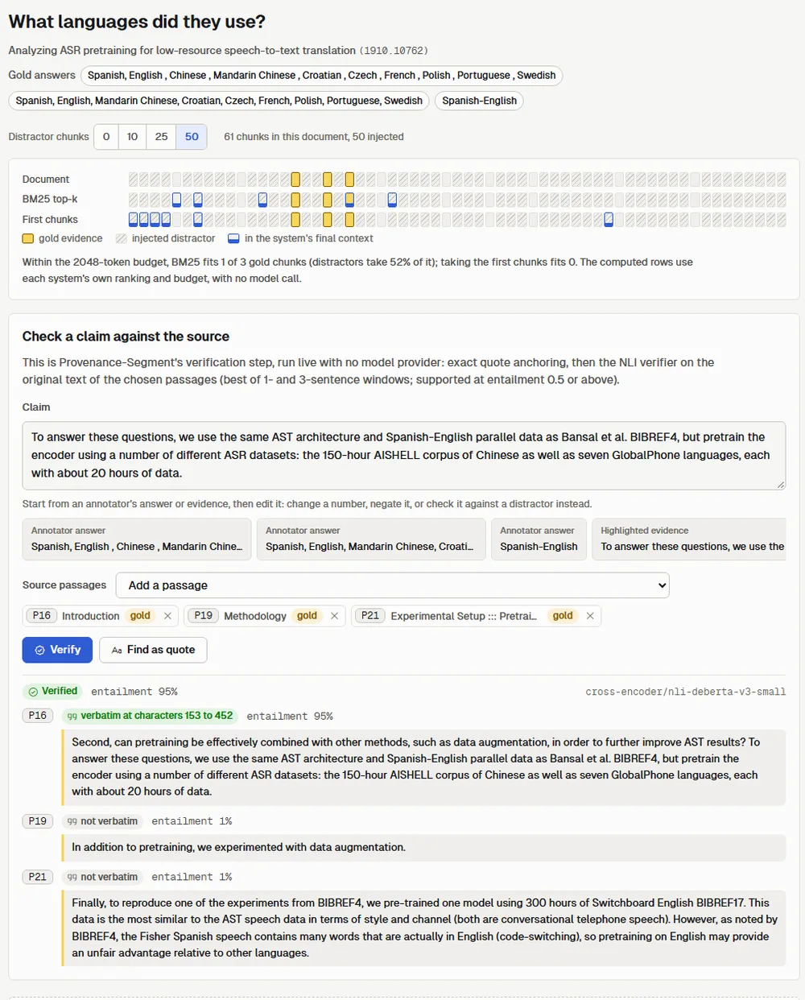
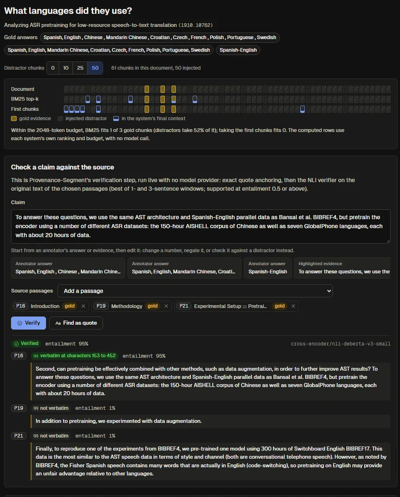

Every answer claim, traced to the passage that proves it.
Long-document question answering with short-context models, where each cited statement is checked against the original source text.


The question
Can chunk-level evidence tracking and claim verification reduce unsupported answers in long-document QA, without a long-context model?
Short-context models must compress a long document: retrieve a few chunks, or summarise every segment and merge the notes (Segment+, Shi et al., EMNLP 2024). Compression is where evidence is lost or invented, and a citation alone does not show that the source still says what the answer claims.
Pre-registered hypothesis, frozen 2026-10-21
Against BM25 top-k RAG with the same 2,048-token context budget and base model, Provenance-Segment lowers the unsupported-claim rate on QASPER questions with 50 injected distractor chunks, while keeping answer F1 within 2 points.
- Paired difference in unsupported claims: 95% bootstrap CI below 0, permutation p < 0.05.
- Lower CI bound of the paired answer-F1 difference at least -2.0.
How it works
Provenance is kept at every compression step, and the final check reads the original text, never the model's notes.
Chunk
Section-aware chunks with stable IDs and the exact paragraphs each one owns.
Inject noise
0, 10, 25 or 50 chunks from other papers, nested and matched across systems.
Note and anchor
Per-chunk notes; every quote located at character offsets or removed.
Merge with provenance
Merged facts keep their source chunk; invented links are dropped.
Verify
NLI checks each statement against its cited original text. Revise once, drop, or abstain.
First chunks in document order until the budget is full.
BM25 top-ranked chunks until the budget is full.
Segment+-style notes, filter and merge, no provenance checks.
Anchored quotes, provenance-checked merges, claim verification.
Same base model, answer prompt, citation format and 2,048-token budget for every system. Citations use neutral handles (P01, P02, ...), so distractors cannot be spotted by their label. A separate judge model scores citation support.
Results so far
Two experiments that need no language model have been run on the frozen sample. Means with 95% bootstrap confidence intervals.
| Distractor chunks | 0 | 10 | 25 | 50 |
|---|---|---|---|---|
| BM25 top-k | 77.669.2 to 85.2 | 67.057.9 to 75.7 | 61.552.5 to 71.0 | 52.042.4 to 61.8 |
| First chunks | 42.833.5 to 52.0 | 19.212.2 to 27.5 | 8.54.0 to 14.5 | 3.00.5 to 6.5 |
| Distractor share of BM25 budget | 0.0 | 22.6 | 34.7 | 39.5 |
| Windows | Own chunk | Distractor |
|---|---|---|
| 3 sentences | 71.7 | 3.3 |
| 1 and 3 (adopted) | 100.0 | 5.0 |
Share of verbatim annotator evidence entailed, on validation data. Chosen before any prediction; the test-split figure (65.0% for 3-sentence windows) is reported as observed.
Even good retrieval loses half of the gold evidence by 50 distractors. The segment-based systems read every chunk, so their losses move to filtering, merging and answering, which the main experiment measures.
Main comparison: not run yet.
Answer F1, citation precision, unsupported-claim rate, abstention and cost for all systems at every noise level need the base model (estimated at about $320 on claude-opus-5-5). No model result is shown anywhere until it has been produced by the published commands.
Limitations
One dataset
QASPER only, NLP papers. Generalisation to other long documents is not claimed.
Synthetic noise
Random distractors from other papers are easier than in-document noise; a BM25-similar variant is configured.
Judged support
Citation support is decided by an LLM judge, audited on 100 human-labelled pairs; a cross-family judge can be swapped in.
Imperfect verifier
NLI can miss subtle errors and reject valid paraphrases or multi-hop reasoning; both rates are measured, not assumed away.
Token F1
Penalises verbose but correct answers; every system gets the same concise-answer prompt.
Same model family
Base model and judge are both Claude models unless the cross-family judge is used.
Code, demo and report
@misc{ahmad2026provenancesegment,
title = {Provenance-Segment: Source-Verifiable Long-Document Question Answering with Short-Context LLMs},
author = {Ahmad, Arslan},
year = {2026},
url = {https://github.com/arslan-ahm/provenance-segment}
}